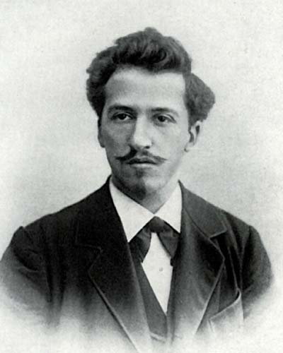
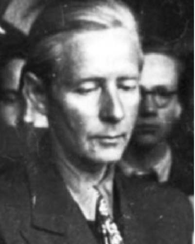
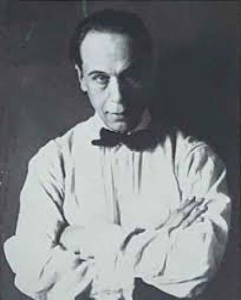
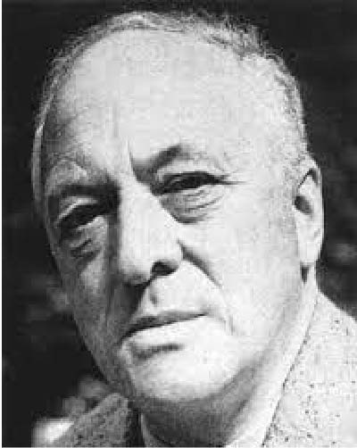

- 
- piet mondrian
- Piet Mondrian fue un artista Holandes que centraba su obra a la revista De Stijl. Se formó como maestro de dibujo de educación obligatoria y a finales de siglo en Amsterdam se empezó a relacionar con los innovadores grupos artísticos del momento. Pero es en Paris, en 1912, donde comienza su pasión por el cubismo. Durante la Gran Guerra regresa a su país, y en 1917 funda la revista De Stijl. La cual se separa unos años después por un desacuerdo acerca de las lineas diagonales. Al estallar la segunda guerra mundial se muda a los Estados Unidos, y fallece en 1944.

- 
- peter keller
- DIseñador Gráfico, Arquitecto, alumno de la BauHaus, y pintor. Durante sus estudios en la BauHaus comenzo a experimentar con el uso de los colores, sobre todo los colores primarios; Allí creo su célebre obra: cuna. Después de dejar la Bauhaus, trabajó como consultor creativo para varias industrias, pero en 1936 los nazis le prohibieron exhibir su trabajo. Se vio obligado a trabajar como arquitecto independiente y como escenógrafo de cine. Tras la guerra ingresó en la recién fundada Facultad de Arquitectura y Bellas Artes. Eseñó dibujo, diseño y arquitectura. Trabajó como arquitecto y desde 1965 se dedicó también a la pintura; hasta que falleció en 1982 en Weimar.
- 
- theo van doesburg
- De formación autodidacta, en sus primeros años de dedicación a la pintura realizó obras ligadas al naturalismo y al impresionismo. En 1915 conoció a Piet Mondrian, y un poco más tarde a Bart van der Leck y al arquitecto J. J. P. Oud. Junto a ellos y otros artistas fundó la revista De Stijl. Van Doesburg ocupó el puesto de editor de la revista y publicó numerosos artículos bajo los pseudónimos de J. K. Bonset y Aldo Camini. En 1925 Van Doesburg introdujo la diagonal en sus composiciones, lo que desencadenó la ruptura definitiva con Mondrian. Luego de su separación de DE STIJL comenzó a dar clases en la BAUHAUS y se interesó por la arquitectura. Desde 1925 proyectó la construcción de su casa-estudio en Meudon, que no pudo ver finalizada por su inesperada muerte, acaecida en 1931 a causa de un infarto.
- 
- bart van der leck
- Bart Van der Leck inició su carrera colaborando con Piet Klaarhamer en la ilustración de libros. A medida que avanzaba en su trayectoria pictórica, su estilo se transformó hacia formas más planas y el uso de colores primarios, alejándose de lo figurativo y acercándose a la abstracción. Su encuentro con Piet Mondrian en 1916 fue fundamental, ya que impactó su paleta y las formas que empleaba. Aunque su participación en el grupo De Stijl fue breve, Van der Leck dejó una huella significativa en el movimiento, influyendo en artistas como Mondrian, Van Doesburg y Vilmos Huzar. Su estilo se caracterizó por el uso de colores primarios y una geometría rigurosa, y su legado continuó resonando en el desarrollo del neoplasticismo, a pesar de su distanciamiento del grupo.